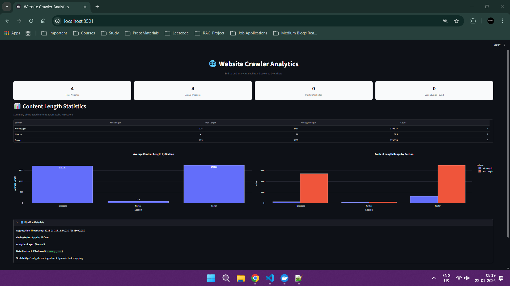
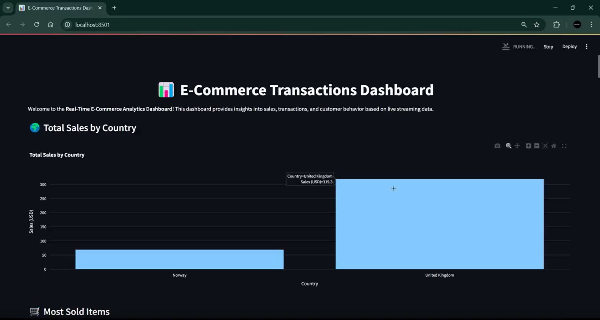
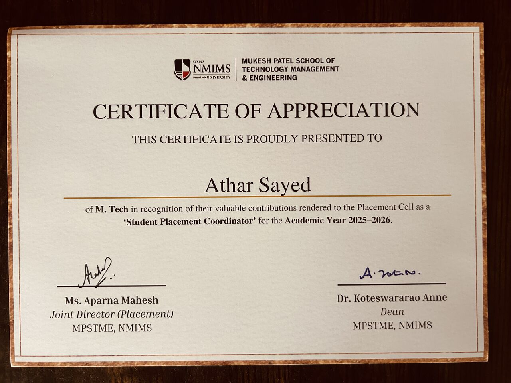
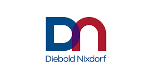

Hi, I'm Athar Sayed
Agentic AI Engineer
0
Years Experience
0
Projects
0
Technologies
About Me
Hi, I'm Athar Sayed.
I design and build production-ready systems at the intersection of agentic AI, large language models, and scalable backend engineering.
Agentic AI
LLM & RAG
Backend Systems
Applied ML
I completed my M.Tech in Artificial Intelligence from NMIMS in 2026 and have hands-on experience developing GenAI solutions, retrieval systems, workflow automation, and resilient infrastructure. My focus is on building AI that is reliable, secure, measurable, and ready for real-world use.
Let's build the next generation of AI-powered products together.
B.Tech — Electronics & Telecommunication
Featured Projects
Selected work across agentic AI, machine learning, and data-driven platforms — designed to be practical, reliable, and impactful.
Der Kurator: Document Grounded RAG System
- Built an end-to-end document-grounded RAG system covering ingestion, retrieval, generation, and evaluation.
- Implemented multi-format ingestion (PDF, DOCX, PPTX, TXT) with structure-aware chunking to preserve numeric and variant-specific data.
- Developed FAISS-based semantic retrieval with variant-aware filtering, diversity control, and safe fallback logic.
- Added multi-layer hallucination control with strict grounding prompts, answer gating, citations, and safe abstention.
- Results: 97% grounded sentence rate, 99% faithfulness, and controlled hallucination behavior.

Vigilix: Network Intrusion Detection System
- Developed a Network Intrusion Detection System (NIDS) using the UNSW-NB15 dataset, achieving 80%+ accuracy in intrusion detection.
- Evaluated ML models (XGBoost, Random Forest, Isolation Forest), with XGBoost achieving 87.95% accuracy, 85.35% precision, and 89.61% F1-score.
- Optimized XGBoost performance through hyperparameter tuning, improving accuracy by 13% and F1-score by 5.25%.
- Automated end-to-end workflow with Kafka, Prometheus, Grafana, and a custom dashboard, enabling 99.9% uptime.

IntelliTube: AI Powered YouTube Insight Engine
- Developed end-to-end YouTube video analysis platform with 100% local execution
- Achieved 95% transcription accuracy using Faster Whisper
- Multilingual sentiment analysis with 89% accuracy
- Secure user authentication for 50+ concurrent users
- Question-Answering module leveraging FAISS vector search, MPNet embeddings, and an Ollama-powered Mistral LLM, achieving ~35% faster retrieval, 20–25% improved answer relevance, and significantly reduced hallucinations through recursive text-chunking and a grounded QA prompt.

CrawlFlow: Website Crawling & Analytics Pipeline
- Built a configurable website-crawling pipeline that scales across sites listed in a YAML configuration.
- Orchestrated parallel crawling, content extraction, transformation, and aggregation with Apache Airflow dynamic task mapping.
- Extracted website sections and generated analytics-ready metrics in a shared JSON data contract.
- Created a decoupled Streamlit dashboard with website KPIs, content statistics, Plotly charts, and pipeline metadata.
- Packaged the pipeline and dashboard as reproducible Docker services.

Academic Dashboard Mtech Students
- Collected and preprocessed academic and demographic data for 44 M.Tech students, ensuring 100% data accuracy through thorough cleaning and validation techniques.
- Analyzed data to extract key insights, leading to improved visualization strategies and highlighting trends in academic performance and participation.
- Designed and implemented over 10 interactive visualizations using tools like Matplotlib and Plotly to represent student metrics on a user-friendly dashboard.
- Deployed the dashboard on Streamlit Cloud, achieving seamless access and reducing manual reporting efforts by over 80%.

StreamPulse : Real-Time E-Commerce Transactions Dashboard
- Built real-time e-commerce transaction monitoring system using Kafka + Spark Structured Streaming + Streamlit, processing 1,000+ events/min with <2s latency.
- Implemented end-to-end streaming pipeline: Kafka producer simulating e-commerce events → Spark job for data cleansing and aggregation → live-updating Plotly dashboard with dark theme.
- Built 8+ interactive visualizations showing real-time revenue, transactions per minute, top products, Total Sales by country , and customer geographic distribution using PySpark and Streamlit.
Blogs
Recent posts on Medium — click any card to read the full article.
Publications
IEEE ICRTEC 2023
IoT Based Crowd Detection and Stampede Avoidance using Predictive Analysis
Developed an IoT-powered crowd monitoring system with real-time predictive analytics. Leveraged computer vision and ML algorithms to detect high-risk stampede conditions with 92% accuracy, improving large-event safety outcomes.
Springer Nature 2026
Predictive Analysis of Stress Based on Vital Physiological Metrics
This study uses wearable-sensor data and machine learning to detect stress in real time, offering a more objective and timely alternative to conventional self-report methods.
Achievements
10+
AI Projects Completed
2
Research Papers Published
5
Pull Requests Merged
900+
GitHub Contributions (2025)
150+
LeetCode Problems Solved
Awards & Recognition
Student Placement Coordinator — Certificate of Appreciation
Academic Year 2025–2026NMIMS Mukesh Patel School of Technology Management & Engineering (MPSTME)
Recognized for valuable contributions to the Placement Cell as a Student Placement Coordinator, supporting student coordination and placement-related activities during the Academic Year 2025–2026.

Technical Skills
Programming Languages
- Python
- C++
- C
- JavaScript
- SQL
Generative AI & LLMs
- Large Language Models (LLMs)
- Retrieval-Augmented Generation (RAG)
- LangChain
- LangGraph
- PydanticAI
- Transformers
- HuggingFace
- Ollama
- FAISS
- ChromaDB
- Agentic AI
- Prompt Engineering
- LLM Evaluation
- OpenAI API
- Embeddings
- Natural Language Processing (NLP)
- LLaMA
- Model Context Protocol (MCP)
ML & Data Frameworks
- TensorFlow
- PyTorch
- Keras
- Pandas
- Numpy
- Apache Spark
- Apache Kafka
- OpenCV
- YOLO (Object Detection)
Backend & APIs
- FastAPI
- Flask
- Streamlit
- Gradio
- Node.js
- REST APIs
Cloud & AI Infrastructure
- Microsoft Azure
- Azure OpenAI
- Azure Blob Storage
- Azure Automation
- Azure App Services
- Microsoft Entra ID
- Microsoft Foundry
- Azure AI Search
- AWS EC2
- AWS S3
- AWS Lambda
- AWS IAM
- Oracle Cloud Infrastructure (OCI)
DevOps & MLOps
- Docker
- Kubernetes
- Jenkins
- Git
- GitLab
- CI/CD
- Prometheus
- Grafana
- GitHub Actions
- Linux
- Bash
- OpenShift
- Jira
- OpenTelemetry
Databases
- MongoDB
- MySQL
- SQLite
Work Experience
Career snapshot 2023–2026 Building dependable AI systems and production software, from retrieval pipelines to cross-platform releases.
Export
Preprocess
Embed
FAISS Index
Docker Validate
Nexus (GAV)
Azure Blob
Replaced a local GPU embedding model with Azure AI Foundry serverless embeddings; no dedicated compute
BEFORE
All ~38K records in memory
AFTER
BrowserExpress APICachePostgreSQL
PaginationLRU/TTL cacheRequest coalescingConnection pooling
illustrative
Content-hash and timestamp change detection avoids reprocessing unchanged content
Re-indexedSkipped (unchanged)
6+
production C++ libraries released
LinuxWindowsmacOS
+

Gen AI Intern
Diebold NixdorfCore tools & expertise
- Python
- LLMs & RAG
- Docker
- PyArmor
- Jenkins
- Nexus Repository
- Confluence
- Azure AI Foundry
- Azure Blob Storage
- Azure Automation
- Jira Service Desk
- E5-large embeddings
- FAISS
- React
- Express
- PostgreSQL
Contributions & outcomes
10 contributionsImproved enterprise chatbot answer quality
Ran prompt experiments and LLM output evaluation, and optimized context handling, to make answers more contextual and consistent and to reduce hallucinations. Built a preprocessing pipeline for HR knowledge sources to improve ingestion and retrieval for the HR chatbot.
Built an end-to-end Confluence knowledge-indexing pipeline
Re-engineered ingestion so export, preprocessing, embedding generation, and FAISS index creation run as a single pipeline directly on Jenkins agents, eliminating dedicated compute infrastructure. Docker validation, timestamped versioning, and GAV-based publishing to Nexus are built in.
Made indexing incremental to cut reprocessing
Added content-hash and timestamp-based change detection so full and incremental builds both run from the same pipeline. Unchanged content is no longer reprocessed, reducing processing time and compute costs.
Removed the GPU dependency from embedding generation
Replaced the locally hosted E5-large model (previously on a GPU VM) with Azure AI Foundry's serverless embedding model, so embeddings are generated through a cloud API inside the Jenkins pipeline. This removed the GPU infrastructure and reduced its cost.
Designed a configurable FAISS indexing architecture
Built a reusable indexing pipeline supporting incremental updates, multiple agent modes, and dynamic raw-index selection, so different indexing strategies run through configuration instead of separate code paths.
Delivered production Jira Service Desk indexing pipelines
Built Jenkins pipelines that index tickets in open, closed, or combined modes, with separate data and KB-summary handling and resilience to empty exports. Fixed issues across both production and non-production workflows.
Restored production runbook execution on Azure
Resolved Hybrid Worker failures by provisioning a new worker in the existing Azure Automation Account and Resource Group, configuring its VM dependencies, and integrating it with runbook execution. Validated the automated pipeline run end to end.
Automated index delivery to centralized storage
Built a Jenkins pipeline that transfers generated indexes from Nexus Repository to Azure Blob Storage automatically, giving the team a single, reliable location for index storage.
Rebuilt a chatbot analytics app to scale
Re-engineered a Streamlit app into a React + Express dashboard, replacing in-memory loading of ~38K PostgreSQL records with on-demand API retrieval. Added server-side pagination, filtering, sorting and search, LRU/TTL caching, request coalescing, and connection pooling.
Shipped lightweight, protected container images
Optimized Docker images for the AI-Assist Config Agent using lightweight Red Hat-based packages and minimal dependencies, reducing container size. Protected proprietary Python code for client distribution with PyArmor obfuscation and compiled .pyc files.
Software Engineer
FortytwoLabsCore tools & expertise
- C++
- Makefiles
- Linux
- Windows
- macOS
- Prometheus
- Grafana
- OpenTelemetry
- Red Hat OpenShift
- Dynatrace
- Android
- ADB Shell
- Cross-platform release engineering
- Digital signatures
Contributions & outcomes
8 contributionsDelivered releases for 6+ production C++ libraries
Managed build and release processes to support stable deployment across Linux, Windows, and macOS.
Strengthened application-level cryptographic controls
Implemented policy signature generation and verification modules to enhance application security and improve cryptographic processing efficiency.
Automated Linux compilation and packaging
Developed and maintained Makefile-based build scripts for compilation, dependency management, and packaging.
Made application health and resource use easier to monitor
Implemented Prometheus monitoring and built Grafana dashboards for application health, resource utilization, and operational metrics.
Evaluated distributed tracing for application workflows
Conducted an OpenTelemetry proof of concept to assess distributed tracing and observability across application workflows.
Supported availability of containerized workloads
Monitored deployments and pod health on Red Hat OpenShift, helping troubleshoot workloads and maintain application availability.
Investigated performance and operational issues
Used Dynatrace to monitor application performance, analyze system metrics, and help identify bottlenecks and operational issues.
Validated Android behavior on physical devices
Debugged Android applications and validated unit tests using ADB Shell, troubleshooting runtime issues on physical devices.
Intern
FortytwoLabsCore tools & expertise
- CentOS
- Linux
- Bash
- Git/GitLab
- Docker
- Apache HTTPD
- Nginx
- REST APIs
- MongoDB
- C++
- Google Test
- OpenSSL
- WebAssembly
- Emscripten
- RSA & Shamir Secret Sharing
Contributions & outcomes
4 contributionsSupported reliable Linux server operations
Worked across CentOS administration, server configuration, SSH access, Bash scripting, filesystem permissions, and troubleshooting.
Configured application delivery and reverse proxies
Worked with Git/GitLab, REST APIs, Postman, and Docker for Linux application deployment; configured Apache HTTPD and Nginx reverse-proxy setups.
Configured replicated MongoDB storage
Set up MongoDB on CentOS, performed CRUD operations and authentication, and implemented a monitored 3-node replica set with primary/secondary configuration.
Built and tested security-focused C++ components
Developed and tested C++ components with Google Test; implemented RSA, Shamir Secret Sharing, and SHA-256/OpenSSL workflows; and worked with C++-to-WebAssembly using Emscripten.
Certifications
LLM, Vertex AI, Gemini & Principles of Google Cloud
Google Cloud
Complete Python from Beginner to Master
Udemy
Intermediate Machine Learning
Kaggle
Linux Mastery Mastering the Command Line
Udemy
Mastering DSA using C and C++
Udemy
Oracle Cloud Infrastructure 2025 Certified AI Foundations Associate
Oracle
Oracle Cloud Infrastructure 2025 Certified Generative AI Professional
Oracle